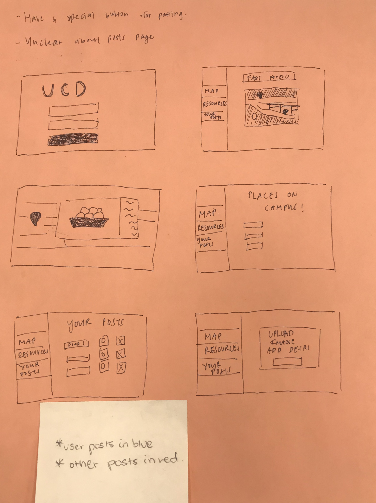
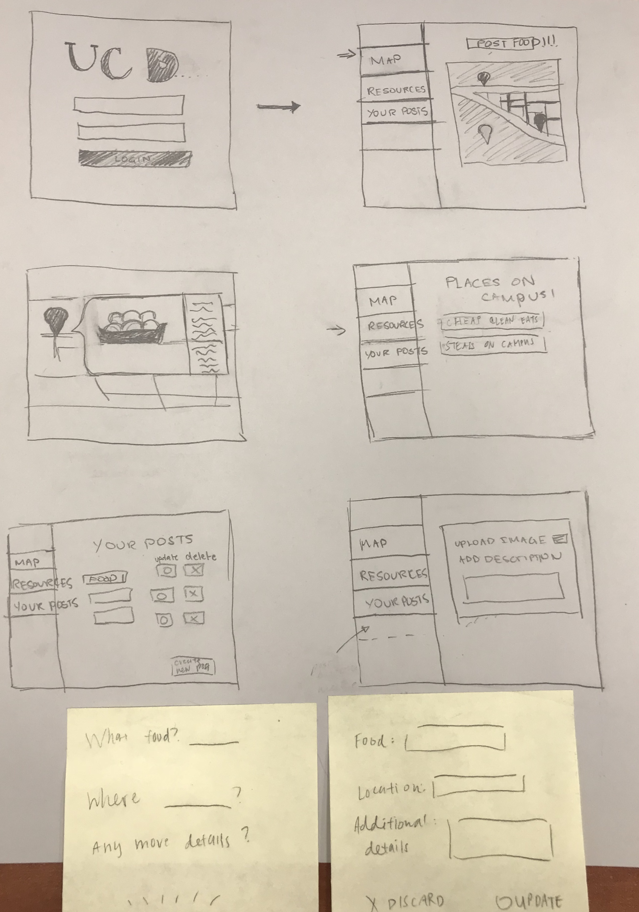

For the first prototype we created the basic interface layout with the login screen and the map screens along with screens that showed campus resources and your posts respectively. For the first layout we received feedback regarding the flow of the popup pages (popups displaying new information on the same page). Our users wanted us to display the access to these popups in a more visible manner. We also got feedback on the layout for the editable interfaces of the posts with users suggesting that we incorporate the appropriate options.

For the second paper prototype, we integrated the feedback we received from our user into the new interfaces. We included popups in the webpages as sticky notes to be displayed on the webpage itself instead of a separate page. We also made edits to the pop up and page that allowed you to manage your posts and edit them. We also named the external links on the resources page so users testing the wireframes know what websites they’re clicking on. We also changed the shape of the box on the map popup that displays the food, description, and location.

This project is a collaboration between Nandhini Gounder and Claudia Chen.